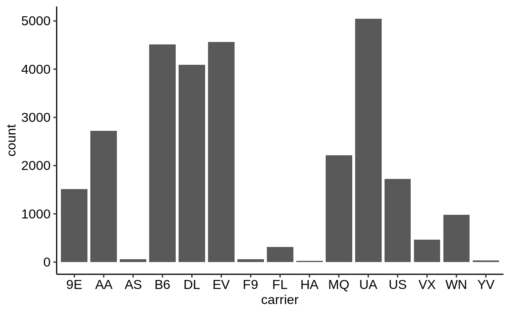
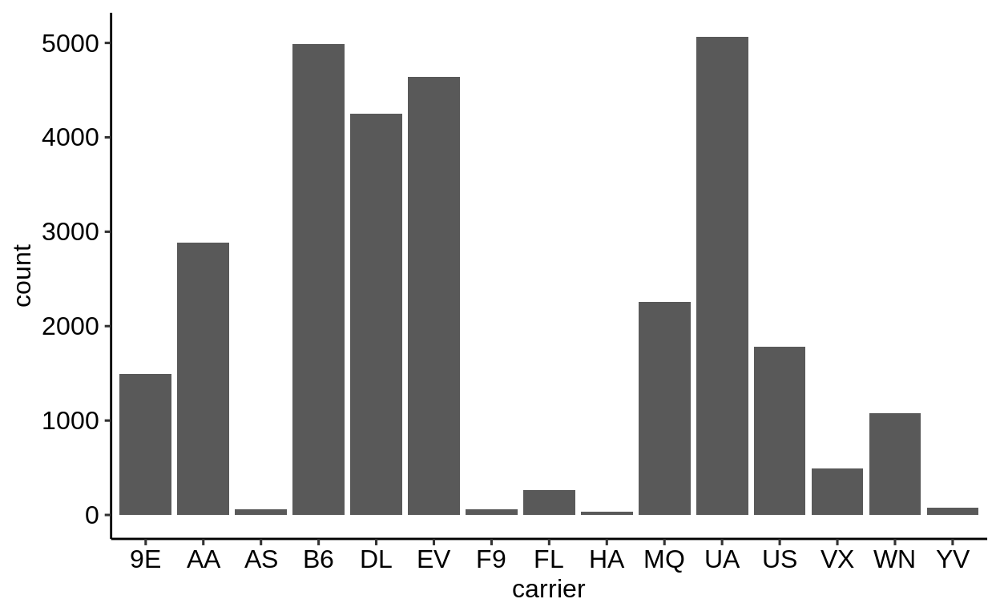
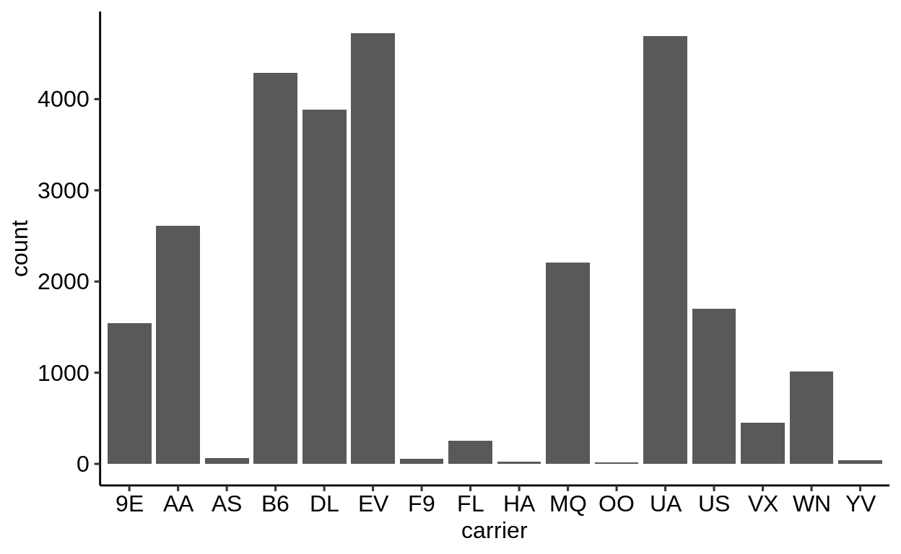
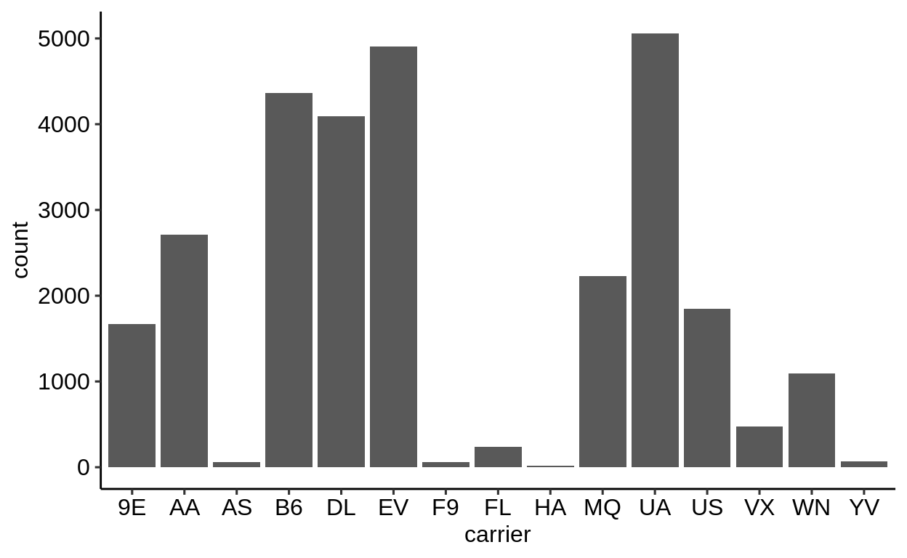
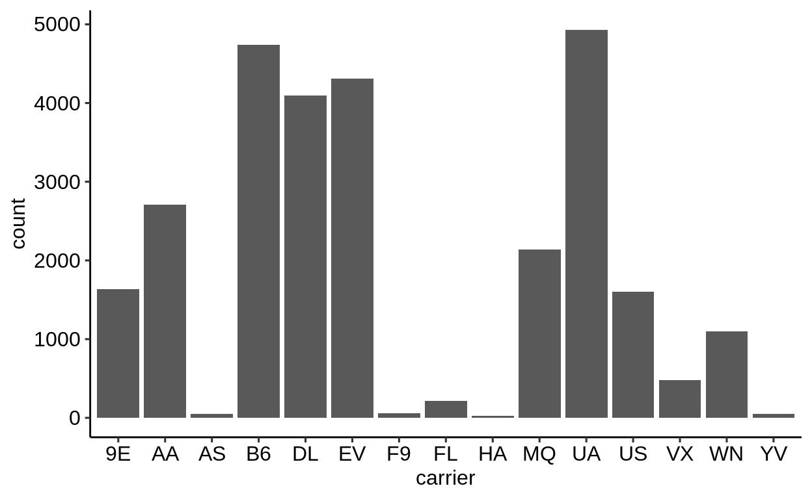

3 Transformation
Using a consistent grammar of data manipulation.
This chapter discusses data transformation with the dplyr package.
- One table:
filter()select()arrange()mutate()summarise()
- Grouped operations
group_by()ungroup()
- Joins
xxx_join()
3.1 Package: {conflicted}
Click here to show setup code.
## [conflicted] Removing existing preference## [conflicted] Will prefer [34mdplyr::filter[39m over any other packageThis section is dedicated to show you the basic building blocks (i.e. functions) of data analysis in R within the {tidyverse}. The package providing these is {dplyr}.
Before starting, we would like to mention the package {conflicted}, which when loaded, will help detecting functions of the same name from different packages (an error is thrown in case of such situations).
It furthermore helps to resolve these situations, by allowing you to choose, the function of which package you prefer (conflicted::conflict_prefer()).
You can see an example in the setup code.
3.2 Filtering
Click here to show setup code.
## [conflicted] Removing existing preference## [conflicted] Will prefer [34mdplyr::filter[39m over any other packageDuring this lecture we will be working with data from the package {nycflights13}, which contains flights in the year 2013 with their departure in New York City (airports: JFK, LGA or EWR) to destinations in the United States, Puerto Rico, and the American Virgin Islands.
## # A tibble: 336,776 x 19
## year month day dep_time sched_dep_time dep_delay arr_time
## <int> <int> <int> <int> <int> <dbl> <int>
## 1 2013 1 1 517 515 2 830
## 2 2013 1 1 533 529 4 850
## 3 2013 1 1 542 540 2 923
## # … with 3.368e+05 more rows, and 12 more variables:
## # sched_arr_time <int>, arr_delay <dbl>, carrier <chr>,
## # flight <int>, tailnum <chr>, origin <chr>, dest <chr>,
## # air_time <dbl>, distance <dbl>, hour <dbl>, minute <dbl>,
## # time_hour <dttm>
The function dplyr::filter() helps you to reduce your dataset to the observations (rows) of interest.
The filter condition can use any of the dataset’s variables and needs to be a logical expression.
## # A tibble: 8,730 x 19
## year month day dep_time sched_dep_time dep_delay arr_time
## <int> <int> <int> <int> <int> <dbl> <int>
## 1 2013 1 1 517 515 2 830
## 2 2013 1 1 533 529 4 850
## 3 2013 1 1 542 540 2 923
## # … with 8,727 more rows, and 12 more variables:
## # sched_arr_time <int>, arr_delay <dbl>, carrier <chr>,
## # flight <int>, tailnum <chr>, origin <chr>, dest <chr>,
## # air_time <dbl>, distance <dbl>, hour <dbl>, minute <dbl>,
## # time_hour <dttm>
The following building blocks are frequently used in a filter:
Missing values can be detected with is.na():
## # A tibble: 8,255 x 19
## year month day dep_time sched_dep_time dep_delay arr_time
## <int> <int> <int> <int> <int> <dbl> <int>
## 1 2013 1 1 NA 1630 NA NA
## 2 2013 1 1 NA 1935 NA NA
## 3 2013 1 1 NA 1500 NA NA
## # … with 8,252 more rows, and 12 more variables:
## # sched_arr_time <int>, arr_delay <dbl>, carrier <chr>,
## # flight <int>, tailnum <chr>, origin <chr>, dest <chr>,
## # air_time <dbl>, distance <dbl>, hour <dbl>, minute <dbl>,
## # time_hour <dttm>
## # A tibble: 8,713 x 19
## year month day dep_time sched_dep_time dep_delay arr_time
## <int> <int> <int> <int> <int> <dbl> <int>
## 1 2013 1 1 2016 1930 46 NA
## 2 2013 1 1 NA 1630 NA NA
## 3 2013 1 1 NA 1935 NA NA
## # … with 8,710 more rows, and 12 more variables:
## # sched_arr_time <int>, arr_delay <dbl>, carrier <chr>,
## # flight <int>, tailnum <chr>, origin <chr>, dest <chr>,
## # air_time <dbl>, distance <dbl>, hour <dbl>, minute <dbl>,
## # time_hour <dttm>
Use & or multiple filters to return only rows that match both criteria:
## # A tibble: 0 x 19
## # … with 19 variables: year <int>, month <int>, day <int>,
## # dep_time <int>, sched_dep_time <int>, dep_delay <dbl>,
## # arr_time <int>, sched_arr_time <int>, arr_delay <dbl>,
## # carrier <chr>, flight <int>, tailnum <chr>, origin <chr>,
## # dest <chr>, air_time <dbl>, distance <dbl>, hour <dbl>,
## # minute <dbl>, time_hour <dttm>
## # A tibble: 10,654 x 19
## year month day dep_time sched_dep_time dep_delay arr_time
## <int> <int> <int> <int> <int> <dbl> <int>
## 1 2013 1 1 1929 1920 9 3
## 2 2013 1 1 1939 1840 59 29
## 3 2013 1 1 2058 2100 -2 8
## # … with 1.065e+04 more rows, and 12 more variables:
## # sched_arr_time <int>, arr_delay <dbl>, carrier <chr>,
## # flight <int>, tailnum <chr>, origin <chr>, dest <chr>,
## # air_time <dbl>, distance <dbl>, hour <dbl>, minute <dbl>,
## # time_hour <dttm>
## # A tibble: 10,654 x 19
## year month day dep_time sched_dep_time dep_delay arr_time
## <int> <int> <int> <int> <int> <dbl> <int>
## 1 2013 1 1 1929 1920 9 3
## 2 2013 1 1 1939 1840 59 29
## 3 2013 1 1 2058 2100 -2 8
## # … with 1.065e+04 more rows, and 12 more variables:
## # sched_arr_time <int>, arr_delay <dbl>, carrier <chr>,
## # flight <int>, tailnum <chr>, origin <chr>, dest <chr>,
## # air_time <dbl>, distance <dbl>, hour <dbl>, minute <dbl>,
## # time_hour <dttm>
Use | to return all rows that match either criterion or both:
## # A tibble: 40,879 x 19
## year month day dep_time sched_dep_time dep_delay arr_time
## <int> <int> <int> <int> <int> <dbl> <int>
## 1 2013 1 1 517 515 2 830
## 2 2013 1 1 533 529 4 850
## 3 2013 1 1 542 540 2 923
## # … with 4.088e+04 more rows, and 12 more variables:
## # sched_arr_time <int>, arr_delay <dbl>, carrier <chr>,
## # flight <int>, tailnum <chr>, origin <chr>, dest <chr>,
## # air_time <dbl>, distance <dbl>, hour <dbl>, minute <dbl>,
## # time_hour <dttm>
3.3 Sorting
Click here to show setup code.
## [conflicted] Removing existing preference## [conflicted] Will prefer [34mdplyr::filter[39m over any other packageThe function dplyr::arrange() sorts the rows of the dataset according to the values of the variable(s) you are providing.
## # A tibble: 336,776 x 19
## year month day dep_time sched_dep_time dep_delay arr_time
## <int> <int> <int> <int> <int> <dbl> <int>
## 1 2013 1 13 1 2249 72 108
## 2 2013 1 31 1 2100 181 124
## 3 2013 11 13 1 2359 2 442
## # … with 3.368e+05 more rows, and 12 more variables:
## # sched_arr_time <int>, arr_delay <dbl>, carrier <chr>,
## # flight <int>, tailnum <chr>, origin <chr>, dest <chr>,
## # air_time <dbl>, distance <dbl>, hour <dbl>, minute <dbl>,
## # time_hour <dttm>
When providing multiple variables as arguments for ... (the ellipsis), the dataset is first sorted accorcing to the values of the first variable.
Wherever these values occur more than once, another sorting takes place within those groups, according to the second variable you provided.
The same rule applies for every further variable you add to arrange().
## # A tibble: 336,776 x 19
## year month day dep_time sched_dep_time dep_delay arr_time
## <int> <int> <int> <int> <int> <dbl> <int>
## 1 2013 11 13 1 2359 2 442
## 2 2013 12 16 1 2359 2 447
## 3 2013 12 20 1 2359 2 430
## # … with 3.368e+05 more rows, and 12 more variables:
## # sched_arr_time <int>, arr_delay <dbl>, carrier <chr>,
## # flight <int>, tailnum <chr>, origin <chr>, dest <chr>,
## # air_time <dbl>, distance <dbl>, hour <dbl>, minute <dbl>,
## # time_hour <dttm>
You can combine filter() and arrange().
flights %>%
filter(dep_time < 600) %>%
filter(month >= 10) %>%
arrange(dep_time, dep_delay) %>%
view()## # A tibble: 1,894 x 19
## year month day dep_time sched_dep_time dep_delay arr_time
## <int> <int> <int> <int> <int> <dbl> <int>
## 1 2013 11 13 1 2359 2 442
## 2 2013 12 16 1 2359 2 447
## 3 2013 12 20 1 2359 2 430
## # … with 1,891 more rows, and 12 more variables:
## # sched_arr_time <int>, arr_delay <dbl>, carrier <chr>,
## # flight <int>, tailnum <chr>, origin <chr>, dest <chr>,
## # air_time <dbl>, distance <dbl>, hour <dbl>, minute <dbl>,
## # time_hour <dttm>
You can use arrange() with arbitrary expressions.
## # A tibble: 970 x 19
## year month day dep_time sched_dep_time dep_delay arr_time
## <int> <int> <int> <int> <int> <dbl> <int>
## 1 2013 4 1 454 500 -6 636
## 2 2013 4 1 509 515 -6 743
## 3 2013 4 1 526 530 -4 812
## # … with 967 more rows, and 12 more variables:
## # sched_arr_time <int>, arr_delay <dbl>, carrier <chr>,
## # flight <int>, tailnum <chr>, origin <chr>, dest <chr>,
## # air_time <dbl>, distance <dbl>, hour <dbl>, minute <dbl>,
## # time_hour <dttm>
The reason for the result you just saw in the view of the filtered dataset is, that the binary result of the expression (TRUE, FALSE) is sorted FALSE first (lexicographically).
Let’s give it a twist:
## # A tibble: 970 x 19
## year month day dep_time sched_dep_time dep_delay arr_time
## <int> <int> <int> <int> <int> <dbl> <int>
## 1 2013 4 1 NA 1125 NA NA
## 2 2013 4 1 NA 1545 NA NA
## 3 2013 4 1 NA 850 NA NA
## # … with 967 more rows, and 12 more variables:
## # sched_arr_time <int>, arr_delay <dbl>, carrier <chr>,
## # flight <int>, tailnum <chr>, origin <chr>, dest <chr>,
## # air_time <dbl>, distance <dbl>, hour <dbl>, minute <dbl>,
## # time_hour <dttm>
Sorting the dataset according to which flights arrived earliest on April 1, 2013:
## # A tibble: 970 x 19
## year month day dep_time sched_dep_time dep_delay arr_time
## <int> <int> <int> <int> <int> <dbl> <int>
## 1 2013 4 1 2243 2245 -2 6
## 2 2013 4 1 2056 1925 91 8
## 3 2013 4 1 2216 2100 76 9
## # … with 967 more rows, and 12 more variables:
## # sched_arr_time <int>, arr_delay <dbl>, carrier <chr>,
## # flight <int>, tailnum <chr>, origin <chr>, dest <chr>,
## # air_time <dbl>, distance <dbl>, hour <dbl>, minute <dbl>,
## # time_hour <dttm>
Invert the sorting by either…
## # A tibble: 970 x 19
## year month day dep_time sched_dep_time dep_delay arr_time
## <int> <int> <int> <int> <int> <dbl> <int>
## 1 2013 4 1 2027 2032 -5 2358
## 2 2013 4 1 2151 1930 141 2358
## 3 2013 4 1 2252 2245 7 2358
## # … with 967 more rows, and 12 more variables:
## # sched_arr_time <int>, arr_delay <dbl>, carrier <chr>,
## # flight <int>, tailnum <chr>, origin <chr>, dest <chr>,
## # air_time <dbl>, distance <dbl>, hour <dbl>, minute <dbl>,
## # time_hour <dttm>
… or:
## # A tibble: 970 x 19
## year month day dep_time sched_dep_time dep_delay arr_time
## <int> <int> <int> <int> <int> <dbl> <int>
## 1 2013 4 1 2027 2032 -5 2358
## 2 2013 4 1 2151 1930 141 2358
## 3 2013 4 1 2252 2245 7 2358
## # … with 967 more rows, and 12 more variables:
## # sched_arr_time <int>, arr_delay <dbl>, carrier <chr>,
## # flight <int>, tailnum <chr>, origin <chr>, dest <chr>,
## # air_time <dbl>, distance <dbl>, hour <dbl>, minute <dbl>,
## # time_hour <dttm>
You can mix sorting in an ascending and a descending manner:
flights %>%
filter(month == 4) %>%
filter(day == 1) %>%
arrange(dep_time, desc(arr_time)) %>%
view()## # A tibble: 970 x 19
## year month day dep_time sched_dep_time dep_delay arr_time
## <int> <int> <int> <int> <int> <dbl> <int>
## 1 2013 4 1 454 500 -6 636
## 2 2013 4 1 509 515 -6 743
## 3 2013 4 1 526 530 -4 812
## # … with 967 more rows, and 12 more variables:
## # sched_arr_time <int>, arr_delay <dbl>, carrier <chr>,
## # flight <int>, tailnum <chr>, origin <chr>, dest <chr>,
## # air_time <dbl>, distance <dbl>, hour <dbl>, minute <dbl>,
## # time_hour <dttm>
3.4 The pipe
Click here to show setup code.
## [conflicted] Removing existing preference## [conflicted] Will prefer [34mdplyr::filter[39m over any other packageWe already heavily used it today, but what exactly are the characteristics of %>%, better known as “the pipe”?
The above is just another way of writing:
The manual describes this operator in detail:
With the pipe, code can be read in a natural way, from left to right. The following snippet extracts
- all early flights
- from October till December,
- ordered by departure time and then departure delay
- and displays it.
Note how the reading corresponds to the code.
flights %>%
filter(dep_time < 600) %>%
filter(month >= 10) %>%
arrange(dep_time, dep_delay) %>%
view()## # A tibble: 1,894 x 19
## year month day dep_time sched_dep_time dep_delay arr_time
## <int> <int> <int> <int> <int> <dbl> <int>
## 1 2013 11 13 1 2359 2 442
## 2 2013 12 16 1 2359 2 447
## 3 2013 12 20 1 2359 2 430
## # … with 1,891 more rows, and 12 more variables:
## # sched_arr_time <int>, arr_delay <dbl>, carrier <chr>,
## # flight <int>, tailnum <chr>, origin <chr>, dest <chr>,
## # air_time <dbl>, distance <dbl>, hour <dbl>, minute <dbl>,
## # time_hour <dttm>
This is possible, because all transformation verbs (filter(), arrange(), view()) accept the main input (a tibble) as the first argument and also return a tibble.
The following three codes are equivalent, but are more difficult to write, to read and to maintain.
Naming is hard. Trying to give each intermediate result a name is exhausting. Introducing an additional step in this sequence of operations is prone to errors.
early_flights <- filter(flights, dep_time < 600)
early_flights_oct_dec <- filter(early_flights, month >= 10)
early_flights_oct_dec_sorted <- arrange(early_flights_oct_dec, dep_time, dep_delay)
view(early_flights_oct_dec_sorted)## # A tibble: 1,894 x 19
## year month day dep_time sched_dep_time dep_delay arr_time
## <int> <int> <int> <int> <int> <dbl> <int>
## 1 2013 11 13 1 2359 2 442
## 2 2013 12 16 1 2359 2 447
## 3 2013 12 20 1 2359 2 430
## # … with 1,891 more rows, and 12 more variables:
## # sched_arr_time <int>, arr_delay <dbl>, carrier <chr>,
## # flight <int>, tailnum <chr>, origin <chr>, dest <chr>,
## # air_time <dbl>, distance <dbl>, hour <dbl>, minute <dbl>,
## # time_hour <dttm>
We can keep using the same variable, e.g. x, to avoid naming.
This adds noise compared to the pipe.
x <- flights
x <- filter(x, dep_time < 600)
x <- filter(x, month >= 10)
x <- arrange(x, dep_time, dep_delay)
view(x)## # A tibble: 1,894 x 19
## year month day dep_time sched_dep_time dep_delay arr_time
## <int> <int> <int> <int> <int> <dbl> <int>
## 1 2013 11 13 1 2359 2 442
## 2 2013 12 16 1 2359 2 447
## 3 2013 12 20 1 2359 2 430
## # … with 1,891 more rows, and 12 more variables:
## # sched_arr_time <int>, arr_delay <dbl>, carrier <chr>,
## # flight <int>, tailnum <chr>, origin <chr>, dest <chr>,
## # air_time <dbl>, distance <dbl>, hour <dbl>, minute <dbl>,
## # time_hour <dttm>
We can avoid intermediate variables. This disconnects the verbs from their arguments and is very difficult to read.
## # A tibble: 1,894 x 19
## year month day dep_time sched_dep_time dep_delay arr_time
## <int> <int> <int> <int> <int> <dbl> <int>
## 1 2013 11 13 1 2359 2 442
## 2 2013 12 16 1 2359 2 447
## 3 2013 12 20 1 2359 2 430
## # … with 1,891 more rows, and 12 more variables:
## # sched_arr_time <int>, arr_delay <dbl>, carrier <chr>,
## # flight <int>, tailnum <chr>, origin <chr>, dest <chr>,
## # air_time <dbl>, distance <dbl>, hour <dbl>, minute <dbl>,
## # time_hour <dttm>
3.4.1 Further advantages
When working on a code chunk consisting of subsequent transformations connected by pipes, it can be useful to end the pipeline with either I or view().
## # A tibble: 1,894 x 19
## year month day dep_time sched_dep_time dep_delay arr_time
## * <int> <int> <int> <int> <int> <dbl> <int>
## 1 2013 10 1 447 500 -13 614
## 2 2013 10 1 522 517 5 735
## 3 2013 10 1 536 545 -9 809
## # … with 1,891 more rows, and 12 more variables:
## # sched_arr_time <int>, arr_delay <dbl>, carrier <chr>,
## # flight <int>, tailnum <chr>, origin <chr>, dest <chr>,
## # air_time <dbl>, distance <dbl>, hour <dbl>, minute <dbl>,
## # time_hour <dttm>
Once the chunk does what you expect it to do, do not forget to remove the I or view() call.
## Error in arrange(dep_time, dep_delay) : object 'dep_time' not foundTo rearrange rows, you can use the shortcut Alt + Cursor up/down.
In a piped expression, no further editing is necessary!
3.5 Pick columns
Click here to show setup code.
## [conflicted] Removing existing preference## [conflicted] Will prefer [34mdplyr::filter[39m over any other packageWith dplyr::select() you can (de-)select and/or rename columns of your dataset.
The basic operation is like in the following examples:
## # A tibble: 336,776 x 3
## year month day
## <int> <int> <int>
## 1 2013 1 1
## 2 2013 1 1
## 3 2013 1 1
## # … with 3.368e+05 more rows
## # A tibble: 336,776 x 18
## month day dep_time sched_dep_time dep_delay arr_time
## <int> <int> <int> <int> <dbl> <int>
## 1 1 1 517 515 2 830
## 2 1 1 533 529 4 850
## 3 1 1 542 540 2 923
## # … with 3.368e+05 more rows, and 12 more variables:
## # sched_arr_time <int>, arr_delay <dbl>, carrier <chr>,
## # flight <int>, tailnum <chr>, origin <chr>, dest <chr>,
## # air_time <dbl>, distance <dbl>, hour <dbl>, minute <dbl>,
## # time_hour <dttm>
Renaming works by addressing an existing column on the right hand side of an equality sign and providing the new name of the column on its left hand side.
## # A tibble: 336,776 x 5
## year month day departure_delay arrival_delay
## <int> <int> <int> <dbl> <dbl>
## 1 2013 1 1 2 11
## 2 2013 1 1 4 20
## 3 2013 1 1 2 33
## # … with 3.368e+05 more rows
With backticks, it is possible, but not advised, to use arbitrary characters (including spaces) in column names:
flights_with_spaces <-
flights %>%
select(
year, month, day,
`Departure delay` = dep_delay,
`Arrival delay` = arr_delay
) %>%
filter(
`Arrival delay` < 0
)Address them in the same way, if the dataset already has such variables:
flights_with_spaces %>%
select(
year, month, day,
dep_delay = `Departure delay`,
arr_delay = `Arrival delay`
)## # A tibble: 188,933 x 5
## year month day dep_delay arr_delay
## <int> <int> <int> <dbl> <dbl>
## 1 2013 1 1 -1 -18
## 2 2013 1 1 -6 -25
## 3 2013 1 1 -3 -14
## # … with 1.889e+05 more rows
The {janitor} package helps fixing issues with colum names automatically.
Select helpers allow selecting multiple related columns conveniently:
## # A tibble: 336,776 x 7
## origin dest dep_time sched_dep_time arr_time sched_arr_time
## <chr> <chr> <int> <int> <int> <int>
## 1 EWR IAH 517 515 830 819
## 2 LGA IAH 533 529 850 830
## 3 JFK MIA 542 540 923 850
## # … with 3.368e+05 more rows, and 1 more variable:
## # air_time <dbl>
3.6 Create new columns
Click here to show setup code.
## [conflicted] Removing existing preference## [conflicted] Will prefer [34mdplyr::filter[39m over any other package## [conflicted] Removing existing preference## [conflicted] Will prefer [34mdplyr::lag[39m over any other packageWith dplyr::mutate() you can add new columns to a table, e.g. making use of the already existing variables.
This is another building block added to the toolset.
How much faster than the scheduled time did the pilots manage to fly:
## # A tibble: 336,776 x 3
## dep_delay arr_delay recovery
## <dbl> <dbl> <dbl>
## 1 2 11 -9
## 2 4 20 -16
## 3 2 33 -31
## # … with 3.368e+05 more rows
Conceptually, the expression that defines the new variable is evaluated for each row.
The following constructs are often applied inside mutate():
- Real functions, see
?base::Mathand?dplyr::lead: Recoding:
if_else(),case_when(),recode()All filtering functions for a new
logicalcolumnstr_replace()for string columns- Functions that process values from other rows:
Work with the newly created variables just like with the original ones:
flights %>%
mutate(recovery = dep_delay - arr_delay) %>%
select(dep_delay, arr_delay, recovery) %>%
arrange(recovery)## # A tibble: 336,776 x 3
## dep_delay arr_delay recovery
## <dbl> <dbl> <dbl>
## 1 -2 194 -196
## 2 -2 179 -181
## 3 180 345 -165
## # … with 3.368e+05 more rows
A mutate() never changes a dataset.
To make a computation persistent, store the entire result as a new dataset variable.
## Error in .f(.x[[i]], ...) : object 'recovery' not foundrecovery_data <-
flights %>%
mutate(recovery = dep_delay - arr_delay) %>%
select(dep_delay, arr_delay, recovery) %>%
arrange(recovery)
recovery_data## # A tibble: 336,776 x 3
## dep_delay arr_delay recovery
## <dbl> <dbl> <dbl>
## 1 -2 194 -196
## 2 -2 179 -181
## 3 180 345 -165
## # … with 3.368e+05 more rows
Let’s look at a single airplane:
## # A tibble: 111 x 5
## year month day dep_time arr_time
## <int> <int> <int> <int> <int>
## 1 2013 1 1 517 830
## 2 2013 1 8 1435 1717
## 3 2013 1 9 717 812
## # … with 108 more rows
Adding the departure time of the next flight to the current row, respectively, using mutate() with lead():
flights %>%
filter(tailnum == "N14228") %>%
select(year, month, day, dep_time, arr_time) %>%
mutate(lead_dep_time = lead(dep_time)) %>%
view()## # A tibble: 111 x 6
## year month day dep_time arr_time lead_dep_time
## <int> <int> <int> <int> <int> <int>
## 1 2013 1 1 517 830 1435
## 2 2013 1 8 1435 1717 717
## 3 2013 1 9 717 812 1143
## # … with 108 more rows
The opposite effect to lead() can be realized using lag():
flights %>%
filter(tailnum == "N14228") %>%
select(year, month, day, dep_time, arr_time) %>%
mutate(lag_arr_time = lag(arr_time)) %>%
view()## # A tibble: 111 x 6
## year month day dep_time arr_time lag_arr_time
## <int> <int> <int> <int> <int> <int>
## 1 2013 1 1 517 830 NA
## 2 2013 1 8 1435 1717 830
## 3 2013 1 9 717 812 1717
## # … with 108 more rows
There is even a use-case for this in our little example. How long does it take for the airplane to return to NYC with each flight out?
flights %>%
filter(tailnum == "N14228") %>%
select(year, month, day, time_hour) %>%
mutate(lag_time_hour = lag(time_hour)) %>%
mutate(ground_time = time_hour - lag_time_hour) %>%
view()## # A tibble: 111 x 6
## year month day time_hour lag_time_hour
## <int> <int> <int> <dttm> <dttm>
## 1 2013 1 1 2013-01-01 05:00:00 NA
## 2 2013 1 8 2013-01-08 14:00:00 2013-01-01 05:00:00
## 3 2013 1 9 2013-01-09 07:00:00 2013-01-08 14:00:00
## # … with 108 more rows, and 1 more variable:
## # ground_time <drtn>
A frequently used workflow is creating a helper variable at some point in the pipeline and then dropping it later on:
flights %>%
filter(tailnum == "N14228") %>%
select(year, month, day, dep_time, arr_time) %>%
mutate(lag_arr_time = lag(arr_time)) %>%
mutate(ground_time = dep_time - lag_arr_time) %>%
select(-lag_arr_time)## # A tibble: 111 x 6
## year month day dep_time arr_time ground_time
## <int> <int> <int> <int> <int> <int>
## 1 2013 1 1 517 830 NA
## 2 2013 1 8 1435 1717 605
## 3 2013 1 9 717 812 -1000
## # … with 108 more rows
Let’s work some more with the flight data of our special plane.
The total air time of a plane up to and including a given flight can be calculated with cumsum():
flights %>%
filter(tailnum == "N14228") %>%
mutate(cum_air_time = cumsum(air_time)) %>%
select(air_time, cum_air_time) %>%
view()## # A tibble: 111 x 2
## air_time cum_air_time
## <dbl> <dbl>
## 1 227 227
## 2 150 377
## 3 39 416
## # … with 108 more rows
Creating a “flag” variable with mutate() allows selecting if a flight was on time or not:
flights %>%
mutate(delayed = if_else(arr_delay > 0, "delayed", "on time")) %>%
select(arr_delay, delayed)## # A tibble: 336,776 x 2
## arr_delay delayed
## <dbl> <chr>
## 1 11 delayed
## 2 20 delayed
## 3 33 delayed
## # … with 3.368e+05 more rows
Shorter, but less verbose:
## # A tibble: 336,776 x 2
## arr_delay delayed
## <dbl> <lgl>
## 1 11 TRUE
## 2 20 TRUE
## 3 33 TRUE
## # … with 3.368e+05 more rows
A flag can be passed on to filter() directly:
## # A tibble: 133,004 x 2
## arr_delay delayed
## <dbl> <lgl>
## 1 11 TRUE
## 2 20 TRUE
## 3 33 TRUE
## # … with 1.33e+05 more rows
Use negation for inverse filtering, and store in a dataset variable for reuse:
on_time_flights <-
flights %>%
mutate(delayed = (arr_delay > 0)) %>%
select(arr_delay, delayed) %>%
filter(!delayed)
on_time_flights## # A tibble: 194,342 x 2
## arr_delay delayed
## <dbl> <lgl>
## 1 -18 FALSE
## 2 -25 FALSE
## 3 -14 FALSE
## # … with 1.943e+05 more rows
3.7 Summarize data
Click here to show setup code.
## [conflicted] Removing existing preference## [conflicted] Will prefer [34mdplyr::filter[39m over any other package## [conflicted] Removing existing preference## [conflicted] Will prefer [34mdplyr::lag[39m over any other packageOften we want to draw just conclusions from larger datasets by gaining insight by using statistical (or other) methods for summarizing – and thus drastically reducing – the data: How much time did all planes spend in the air?
## # A tibble: 336,776 x 2
## air_time total_air_time
## <dbl> <dbl>
## 1 227 49326610
## 2 227 49326610
## 3 160 49326610
## # … with 3.368e+05 more rows
The mutate() call adds a new variable with the same value across all rows.
To reduce the result to a single row, use summarize():
## # A tibble: 1 x 1
## total_air_time
## <dbl>
## 1 49326610
The following functions compute summary values:
-
sum(),prod()na.rm = TRUE
-
mean(),median() -
sd(),IQR(),mad() -
min(),quantile(0.75),max() sum()andmean()forlogicalvariables:r mean(is.na(arr_time))- Ranking
n()-
first(),last(),nth()
Simple counts can be computed with n() inside summarize():
## # A tibble: 1 x 1
## n
## <int>
## 1 336776
A variety of aggregate functions is supported:
## # A tibble: 1 x 1
## median
## <dbl>
## 1 129
It’s possible to produce two different summarizations at once:
flights %>%
summarize(
n = n(),
mean_air_time = mean(air_time, na.rm = TRUE),
median_air_time = median(air_time, na.rm = TRUE)
)## # A tibble: 1 x 3
## n mean_air_time median_air_time
## <int> <dbl> <dbl>
## 1 336776 151. 129
The summarize() verb gains its full power in grouped operations.
Surround with group_by() and ungroup() to compute summaries in groups defined by common values in one or more columns.
In the next example, the same summary is computed separately for each origin airport.
flights %>%
group_by(origin) %>%
summarize(
n = n(),
mean_air_time = mean(air_time, na.rm = TRUE),
median_air_time = median(air_time, na.rm = TRUE)
) %>%
ungroup()## # A tibble: 3 x 4
## origin n mean_air_time median_air_time
## <chr> <int> <dbl> <dbl>
## 1 EWR 120835 153. 130
## 2 JFK 111279 178. 149
## 3 LGA 104662 118. 115
Conceptually this corresponds to the following sequence of operations:
-
Split the dataset into groups defined by the values of the
origincolumn. Each group has the same value inorigin. - Apply the same summary for each group. In this case, the size, mean air time, and median air time is computed across all flights for each group.
- Combine the results into one data frame. The grouping variables and the results are bound together for further analysis.
More often than not, the question “how do I iterate over each group and do …” can be reprased as “what summary value do I want to compute for each group”. Recognizing this takes a bit of practice but is worth the effort, because the analysis code becomes shorter and more robust and often runs faster.
Groups can be defined over multiple columns as well. The next example splits the data into one group for each day.
flights %>%
group_by(year, month, day) %>%
summarize(
n = n(),
mean_air_time = mean(air_time, na.rm = TRUE),
median_air_time = median(air_time, na.rm = TRUE)
) %>%
ungroup()## # A tibble: 365 x 6
## year month day n mean_air_time median_air_time
## <int> <int> <int> <int> <dbl> <dbl>
## 1 2013 1 1 842 170. 149
## 2 2013 1 2 943 162. 148
## 3 2013 1 3 914 157. 148
## # … with 362 more rows
For quick exploration, the names of the new columns can be omitted:
flights %>%
group_by(year, month, day) %>%
summarize(
n(),
mean(air_time, na.rm = TRUE),
median(air_time, na.rm = TRUE)
) %>%
ungroup()## # A tibble: 365 x 6
## year month day `n()` `mean(air_time, n… `median(air_time…
## <int> <int> <int> <int> <dbl> <dbl>
## 1 2013 1 1 842 170. 149
## 2 2013 1 2 943 162. 148
## 3 2013 1 3 914 157. 148
## # … with 362 more rows
The n() function computes a simple count, and is one of the most frequently used summary functions.
The count() function provides a convenient alternative.
## # A tibble: 365 x 4
## year month day n
## <int> <int> <int> <int>
## 1 2013 1 1 842
## 2 2013 1 2 943
## 3 2013 1 3 914
## # … with 362 more rows
3.8 Summary-plots
Click here to show setup code.
## [conflicted] Removing existing preference## [conflicted] Will prefer [34mdplyr::filter[39m over any other package## [conflicted] Removing existing preference## [conflicted] Will prefer [34mdplyr::lag[39m over any other packagePotentially surprisingly, mutate() can also work with the results of a ggplot() call.
Let’s approach this step by step.
Here is a basic barplot of flights$carrier:

Same with one facet per month:
We can extract a function that takes any data and produces a barplot of the variable carrier:
The result of ggplot() is first and foremost an object.
Only when R tries to display it on the console a method is triggered, which causes it to show the graph in the “Viewer”.
Therefore, we can use the group_by – summarize() – ungroup() pattern to produce one plot per group and store it in a new column:
plot_df <-
flights %>%
group_by(month) %>%
summarize(
plot = list(plot_fun(tibble(carrier)))
) %>%
ungroup()
plot_df## # A tibble: 12 x 2
## month plot
## <int> <list>
## 1 1 <gg>
## 2 2 <gg>
## 3 3 <gg>
## # … with 9 more rows
When using dplyr::pull() (this function “extracts” a variable from a data.frame and returns it as a normal vector), each of the plots will be subsequently displayed in your “Viewer”.
## [[1]]##
## [[2]]##
## [[3]]##
## [[4]]
##
## [[5]]##
## [[6]]##
## [[7]]
##
## [[8]]##
## [[9]]
##
## [[10]]
##
## [[11]]##
## [[12]]
Use the left arrow to click through the different plots.